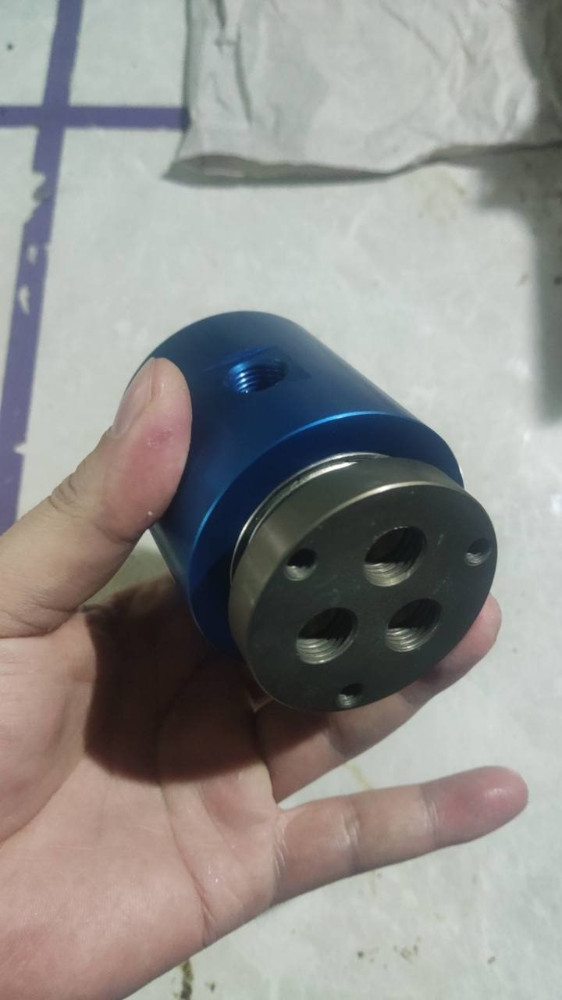
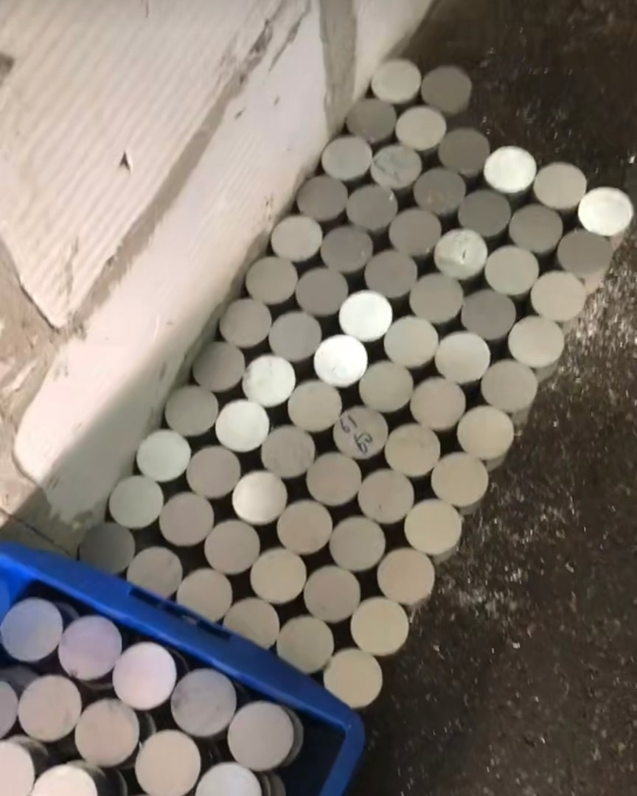
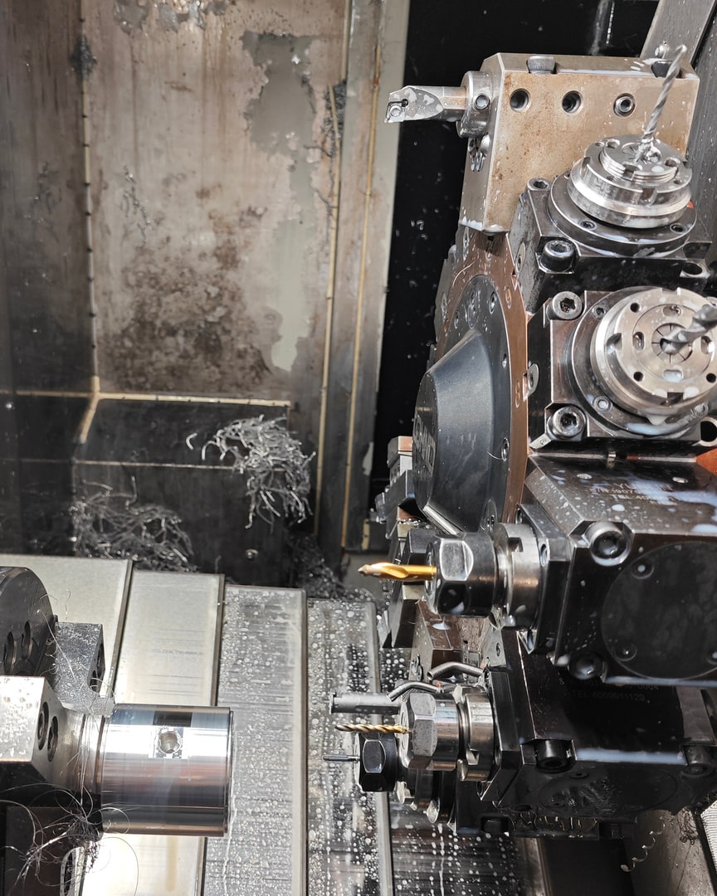
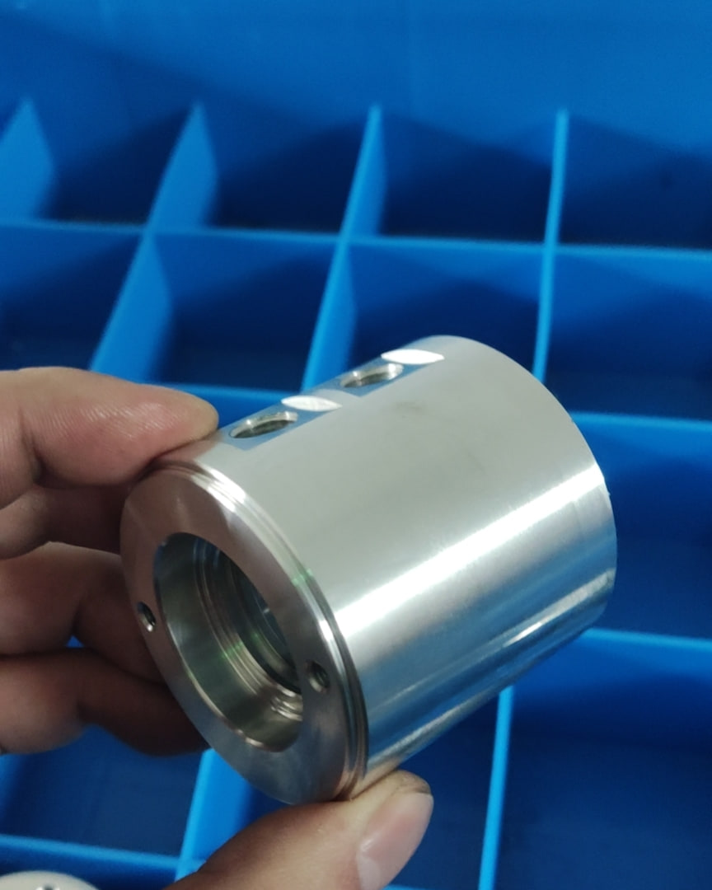
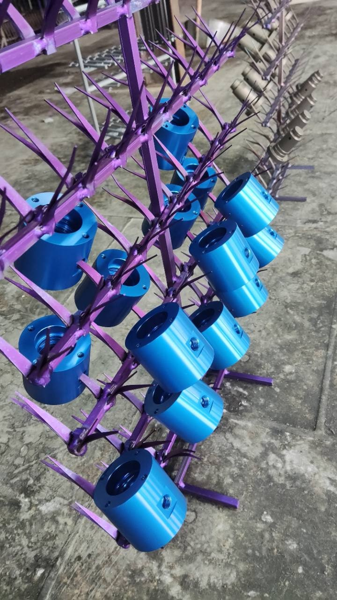
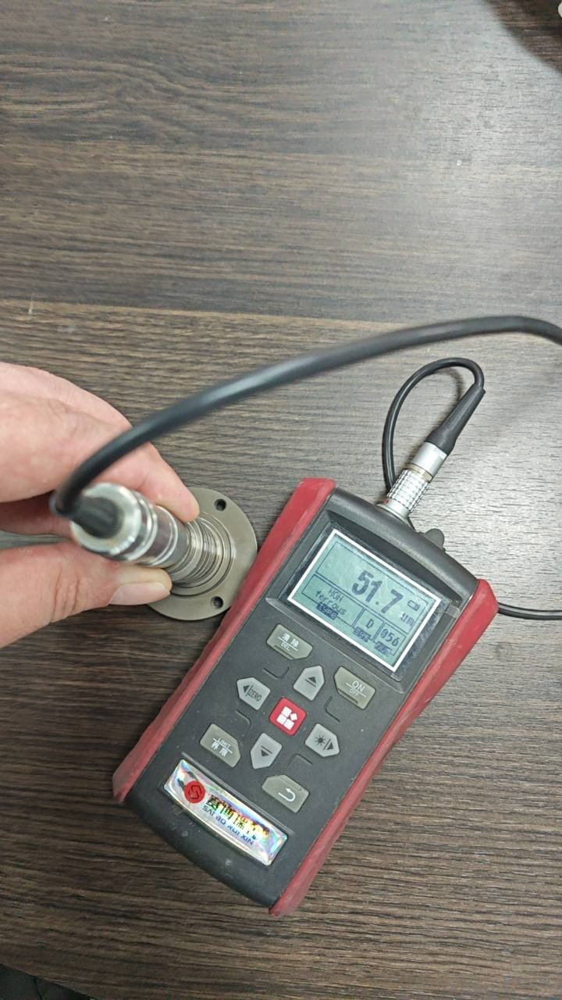
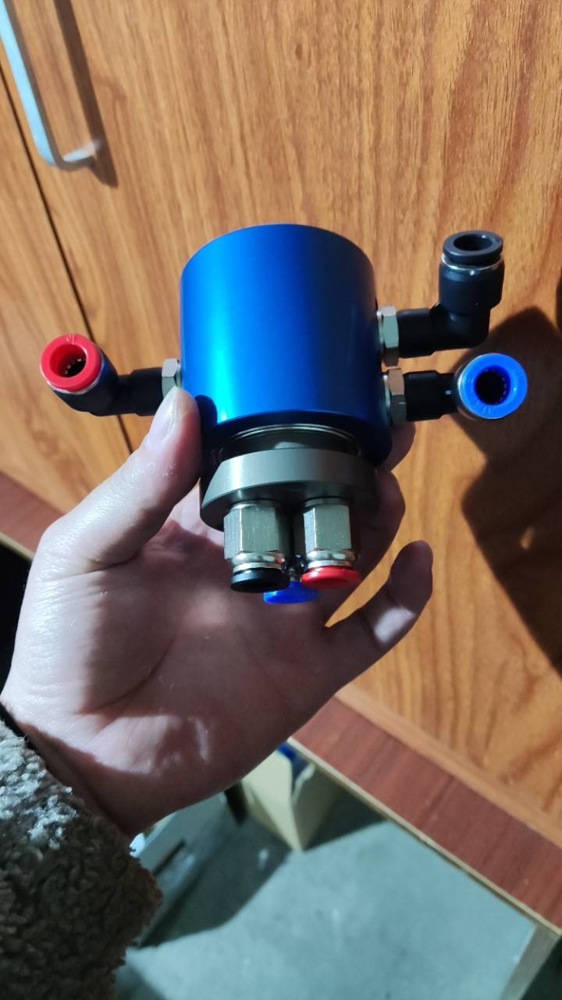
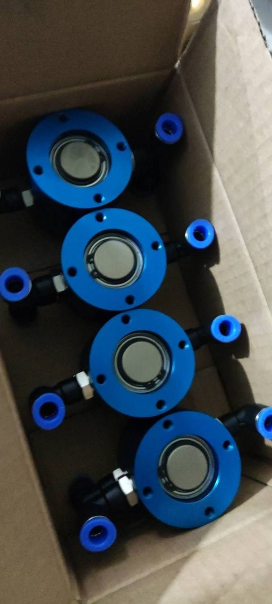

材料準備
通常材は6061アルミ合金です。顧客指定がある場合は7075アルミ合金にも対応します。切断した円形素材をステータハウジング加工用に準備します。
アルミニウム製ロータリージョイント部品の機能に応じた表面処理を、製造写真と皮膜厚さの測定記録とともに紹介します。
最終組立後のすべての空圧用ロータリージョイントについて、各流路を圧縮空気で個別に検査し、PASS／NG判定から不適合品の隔離まで管理する工程を紹介します。

本仕様では、部品の役割に応じて表面処理を使い分けています。回転側のロータには硬質アルマイト処理を、固定側のステータハウジングにはカラーアルマイト処理を採用しています。
硬質アルマイト皮膜は、アルミニウム表面の硬さを高め、耐摩耗性と耐食性の向上に寄与します。低速回転のOリングシール構造では、Oリングが接触する摺動面の傷や摩耗溝の発生リスクを抑えることを目的としています。
実際のシール性と摩耗状態は、仕上げ面粗さ、Oリング材質、潤滑、圧力、回転数、芯ずれ、温度、異物にも左右されます。表面処理は設計要素の一つであり、寿命を保証するものではありません。
Begapunkの標準工程では、4軸複合旋盤を用い、反転・再把持を含む2回の段取りでステータハウジングを加工します。機械加工後は図面寸法を抜き取りで確認し、その後、外部協力会社へカラーアルマイト処理を依頼します。



通常材は6061アルミ合金です。顧客指定がある場合は7075アルミ合金にも対応します。切断した円形素材をステータハウジング加工用に準備します。
1回目の段取りで片側の加工形状を仕上げます。その後、部品を反転して再把持し、2回目の段取りで残りの必要形状を加工します。
機械加工後、表面処理へ送る前に、完成したステータハウジングを図面に基づいて抜き取り検査します。
部品は外部のアルマイト処理会社へ送ります。対応色は現物見本で合意します。ステータのカラーアルマイト膜厚は約5 µmです。処理会社が返送前に膜厚を確認し、Begapunkでも受入時に抜き取り検査を行います。製品に指定された公差は、想定される皮膜成長を考慮しています。
最終組立後は、完成したすべてのロータリージョイントについて、各流路を既存の全数漏れ検査工程で個別に確認します。
全数漏れ検査を見る →
ステータハウジングの色は、装置外観、ブランドカラー、機能識別に合わせ、技術的に対応可能なアルマイト色から選定できます。
量産前に承認済みの実物サンプルで最終色を確認し、合金、下地状態、部品形状、処理ロットによる色差を考慮した許容範囲を合意します。

製造写真では、硬質アルマイト処理ロータについて次の測定値が示されています。
生産工程での皮膜厚さ測定
組立写真は、複数の空圧継手が見えるロータリージョイント組立品を示しています。もう1枚の写真は、複数の組立品が梱包準備されている状態を示します。


有効な表面処理仕様には、皮膜だけでなく、寸法、シール条件、検査方法まで含める必要があります。
処理方法を決める前に、ロータとステータの対象材質を特定します。
処理種別、目標値または許容範囲、マスキング、色見本を定めます。
はめあい、ポート、溝、取付面に対する皮膜成長を考慮します。
Oリングが接触するロータ面の最終表面粗さを確認します。
Oリング材質、潤滑剤、使用流体との適合性を指定します。
圧力、連続・最高回転数、デューティ比、温度、芯ずれ、異物を確認します。
測定方法、測定箇所、抜取数、合否基準、必要な記録を合意します。
量産前に現物色見本と現実的な色差範囲を承認します。